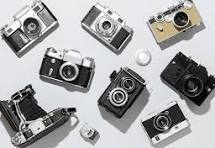
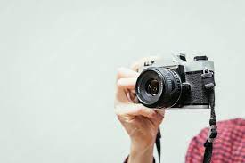
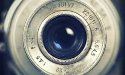

Explore the beauty of timeless photography with our vintage cameras. Capture moments that last a lifetime.
Gallery

Explore the artistry of vintage photography with Vintage Capture Camera. Since 1920, we have been dedicated to preserving the timeless charm of early 20th-century cameras.
Mission

At Vintage Capture Camera, our mission is to provide photographers with a unique experience
that blends the nostalgia of antique cameras with modern technology. We believe in capturing
moments that tell stories and evoke emotions.
History

Founded in the heart of the photography renaissance, Vintage Capture Camera has a rich history.
Our journey began with a passion for craftsmanship and a commitment to delivering cameras that
stand the test of time.
Over the decades, our cameras have become cherished artifacts, sought after by collectors and photographers
alike. Each camera tells a story of a bygone era, a testament to the enduring appeal of vintage photography.
What Sets Us Apart
What makes Vintage Capture Camera truly special is the meticulous attention to detail in the construction of
our cameras. Crafted from antique brass and leather, our cameras embody the essence of a bygone era.
Equipped with precision optics, manual focus, and exposure control, our cameras deliver stunning image quality
and an authentic photography experience. Discover the joy of capturing moments with a Vintage Capture Camera.